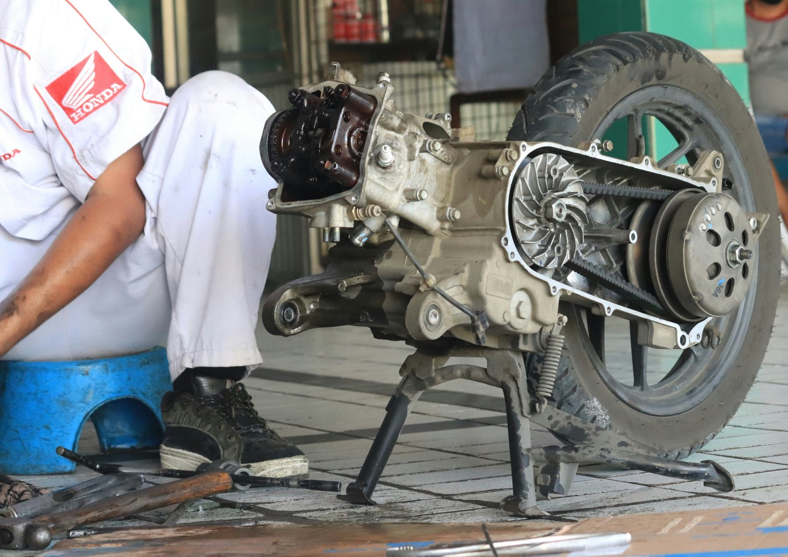
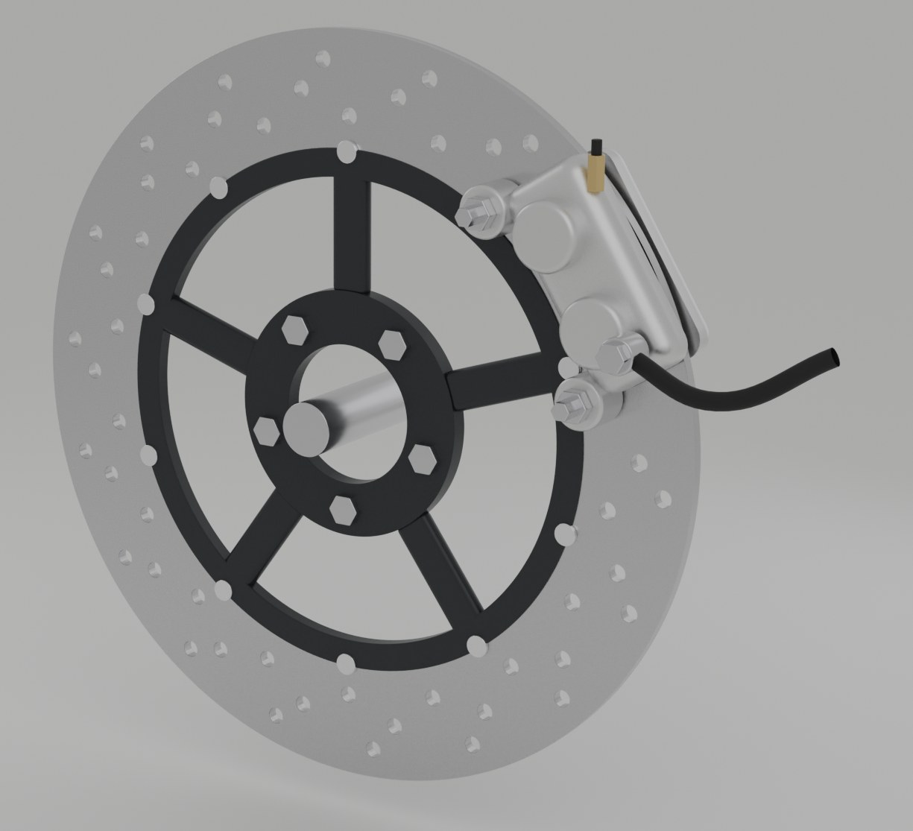
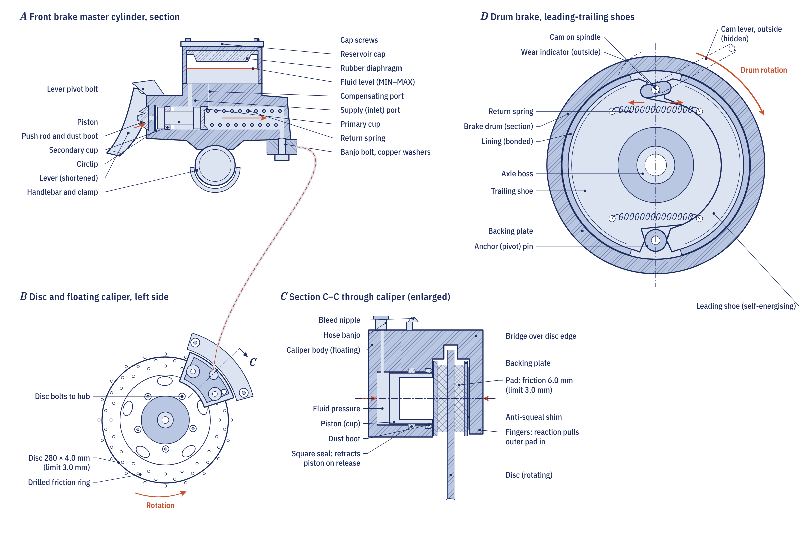
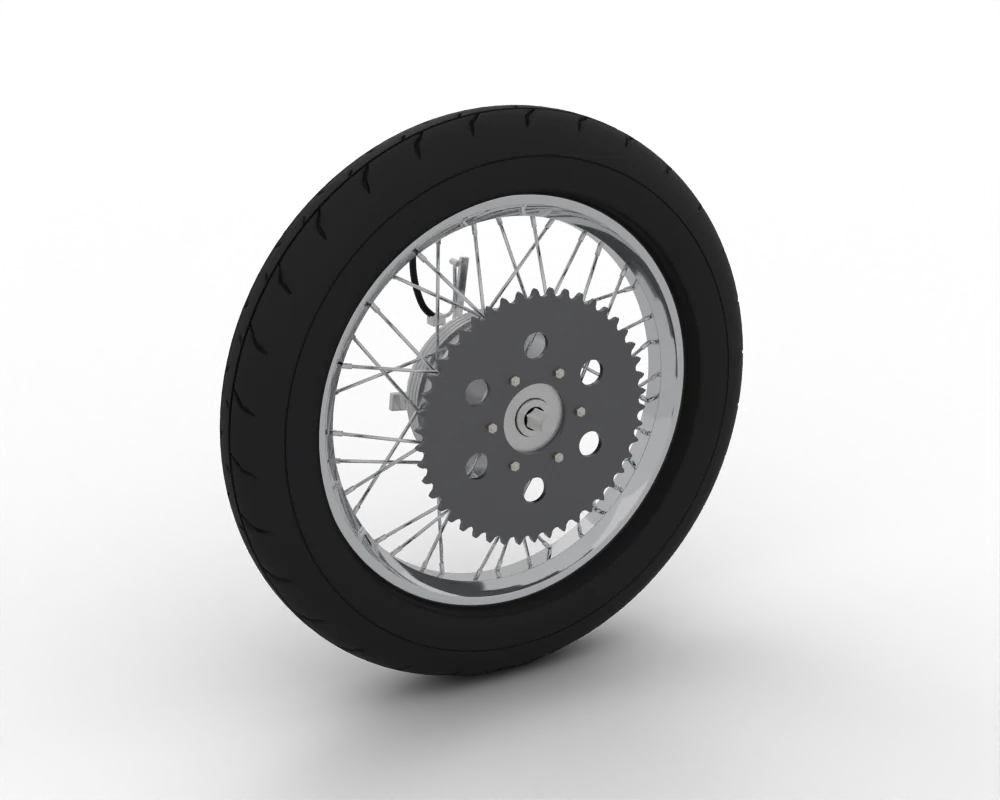
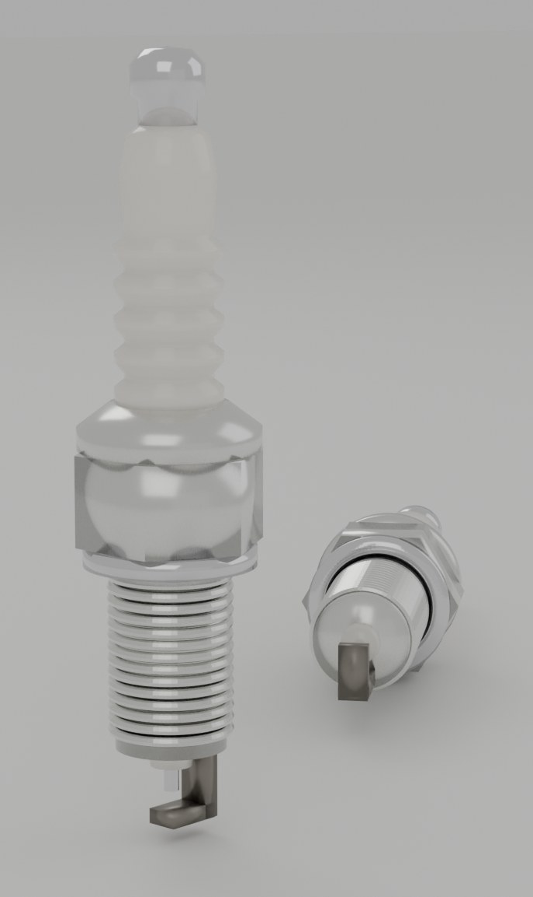

Spare parts / Honda / BeAT / Variator roller weights
Honda BeAT Variator roller weights
Variator roller weights for the Honda BeAT: when to replace it, what it costs, where to buy it and how to fit it.

PhotoWhere to buy
- Google ShoppingSearch results for this partgoogle.com ↗
- eBaySearch results for this partebay.com ↗
- AliExpressSearch results for this partaliexpress.com ↗
- TokopediaSearch results for this parttokopedia.com ↗
- WemotoAftermarket specialist: Commuter and scooter parts incl. Asian 125swemoto.com ↗
Check the part number for your model year before you buy. Genuine (OEM) parts first; good aftermarket parts are fine for wear items. Links open shop searches; Moto Zero earns nothing from them today and will say so here if that changes.
Fit it yourself
Fitment
| Model | Honda BeAT |
| Type | Scooter |
| Engine | 110 cc |
| Final drive | CVT |
| Brakes | Disc and Drum |
| Main markets | ID |
Questions
How often should I replace the Variator roller weights on a Honda BeAT?
As a guide, With belt service. The owner's manual for your model wins, and riding on dusty roads, with a passenger or with heavy loads shortens it.
How much does a Honda BeAT Variator roller weights cost?
Typically US$ 5 to 25, depending on genuine or aftermarket and the shop. Prices are indicative.
Can I replace the Variator roller weights myself?
The job is rated 3 of 5 for difficulty. Follow the step-by-step guide and the values for your model.
More parts for the Honda BeAT

3D render
Plate Photo
Photo
3D render
3D renderAll parts for the Honda BeAT → Variator roller weights for other bikes →